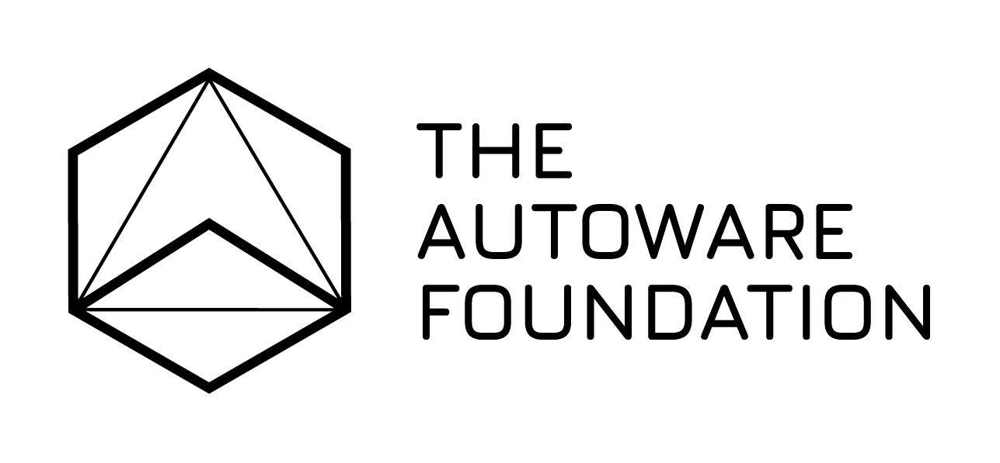
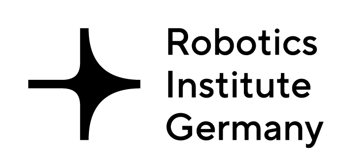

About the workshop
 Autonomous driving has made remarkable progress in recent years. Nevertheless, one unsolved
question remains: How can autonomous vehicle (AV) systems generalize to new environments
or unseen conditions?
Autonomous driving has made remarkable progress in recent years. Nevertheless, one unsolved
question remains: How can autonomous vehicle (AV) systems generalize to new environments
or unseen conditions?
This question can be answered from different angles: (1) Use machine
learning-based software architectures, (2) use more data, (3) apply heavy simulation & real-world
testing or (4) making code open-source available for joint community development.
This workshop will go beyond abstract discussions by confronting participants with the real challenges of generalization in autonomous driving.
We will stage a direct dialogue between two competing paradigms: (1) modular, open-source ecosystems that thrive on community-driven collaboration, and (2) data-hungry end-to-end approaches
that aim to scale through massive models and datasets.
What makes this workshop unique is its hands-on character: participants will experience a live, livestreamed demonstration of the TUM EDGAR autonomous vehicle driving on public roads in Munich,
providing a concrete basis for in-depth discussions on robustness, safety, and scalability.
Through keynotes, interactive sessions, and real-world experiments on topics like domain adaptation, sim-to-real transfer, self-supervised and continual learning, evaluation benchmarks,
and software engineering practices,
we will collectively ask: which paradigm — modular, end-to-end, or hybrid — can truly deliver
generalization in AVs?
Speakers


Program
The workshop will feature prominent speakers, and contributions from the intelligent vehicles and mobile robotics community. The workshop is happening in-person at ICRA 2026 in Vienna. Additionally we welcome participants to listen and contribute virtually via Zoom.
| Time | Talk Title | Speaker |
|---|---|---|
| 14:00 - 14:15 | Opening Remarks | Johannes Betz |
| 14:15 - 14:45 | Generalized Autonomous Driving at Scale | Hongyang Li |
| 14:45 - 15:15 | From Benchmarks to Real-World Autonomous Driving | Cristina Olaverri-Monreal |
| 15:15 - 15:30 | Spotlight Session (5 featured spotlights) | Contributed Papers |
| 15:30 - 16:00 | Coffee Break + Poster Session (13 accepted papers) | |
| 16:00 - 16:30 | Democratizing Autonomous Driving | Kashyap Chitta |
| 16:30 - 17:00 | Embodied Reasoning for Out-of-Distribution Reliability in Autonomy | Marco Pavone / Milan Ganai |
| 17:00 - 17:30 | Open-Source: A Catalyst for Solving the Generalization Problem? | Felix Fent |
| 17:30 - 17:45 | Closing Remarks | Johannes Betz |
Accepted Papers
The submission phase is closed. Decisions have been communicated to authors via OpenReview. All accepted papers are invited to participate in the workshop poster session.
- 23 Submissions
- 13 Accepted papers
- 56.5% Acceptance rate
- 13 Poster invitations
*Listed papers are accepted workshop submissions. PDFs may not yet be the final camera-ready versions and will be updated.
We thank all reviewers for their time, expertise, and constructive feedback to the authors.
FAQ
Call for Contributions:
We invite papers for submission to the workshop related to the topics descripted above and the theme of autonomous racing. Position papers, work in progress and novel but not necessarily thoroughly worked out ideas are encouraged. The submissions will be reviewed by the workshop’s program committee and will undergo a thorough review process and receive 2-3 high quality reviews. In addition, a best paper award will be presented in both categories.
Workshop Paper Style: 4-6 pages, including references. The paper should be in PDF format and use the standard IEEE ICRA Conference template. Accepted paper will be made available on our website and the authors are invited to make an additionl oral (live) presentations, or a video highlight.
Paper Submission: Open until April 15. Feedback is scheduled for May 15.
Submit your paper via the OpenReview submission platform
Organizers


Assistant Professor
Professorship Autonomous Vehicle Systems
Technical University of Munich
PhD Student
Professorship Autonomous Vehicle Systems
Technical University of Munich
This workshop is supported by the
IEEE‑RAS Technical Committee on "Autonomous Ground Vehicles and Intelligent Transportation Systems", TIER IV, the Autoware Foundation, MIRMI, and the Robotics Institute Germany.


